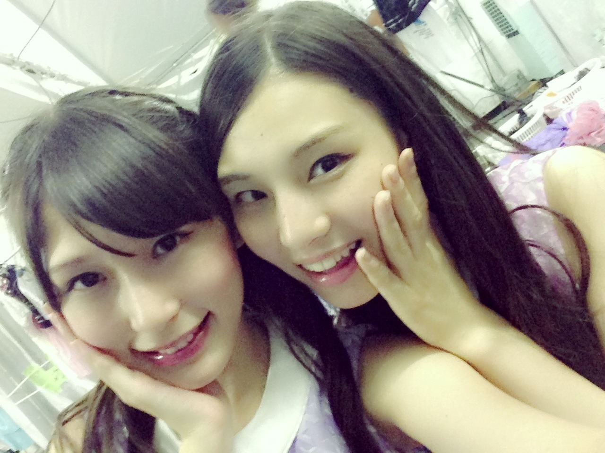
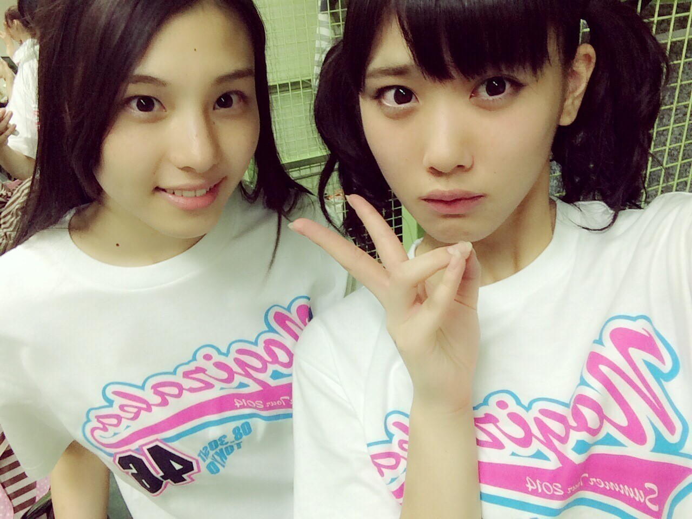

| 2014/09 03 Wed | (*いおり_(．．*)vol.4) |
みなさんこんばんわー！
高校2年生16歳
さがらいおりです！
少し長いけど読んで下さい、、
真夏の全国ツアー
神宮球場でのライブでした！！
神宮球場でのライブは
14年ぶりだったみたいで
ツアーの最後を
そんな素晴らしい所でやらせていただけて
とっても感動しました(/ _ ; )
今回は雨も降らずに出来て
本当によかったです♪♪
うちわとかタオルも振ってくれて
見つけた時は
バイバイしてました *˙︶˙*)ﾉ"
結構探したので
奥の方でも見えてましたよ！！
サインボールもできるだけ
いおりのグッズを
持ってくれてる方の
ほうに投げてたんだけど、
取れたかなー??(>_<)
今回の真夏の全国ツアーで
たくさんのことを
学ぶことが出来たので
少しでも成長出来たらと思います！！
そしてこのツアーの
準備をしてくださった
スタッフさん、関係者の皆さん
本当にありがとうございました。
初めて乃木坂46として過ごした
夏はとっても充実してて
とっても楽しかったです♡
みなさんと一緒に
夏の思い出をつくれて
よかったです(´,,•ω•,,)♡
えっと、質問コーナーの名前募集は
このブログで
締め切りたいと思いまーす♪♪
前回のコメントでも
たくさん考えてくれて
ありがとうございました♡
コーナーの名前は
いおりが候補をいくつかあげて
みなさんで投票みたいな感じで
決めた方がいいかな??
いおりが決めちゃうより
みなさんと決めた方が
いいですよね：）きっと、、

前回のブログのコメントに
自分で投稿してみたんですけど、
見つけた方が
少なかったみたいなので
まだ見つけてない方は
No.313を見てみて下さい♡
質問返しますね♡
 年下だけど呼び捨てでもいい??
年下だけど呼び捨てでもいい??
全然いいですよ♪
呼びやすい名前で呼んで下さい！
趣味は??
お笑いを見に行くこと！！
いおり、お笑いが好きで
去年はよく劇場とかに
見に行ってました♡♡
また行きたい♪♪
好きな食べ物は??
からあげとプリン
あと、フルーツは全部好きです(^O^)
誕生日だからメッセージ欲しいです
9/3 たっちゃんさん
一日遅くなっちゃったけど
お誕生日おめでとうございます

これからもいおりと一緒に
いろんな思い出作れたら嬉しいです///
9/9 シンイチさん
少し早いけど、
お誕生日おめでとうございます
これからいおりのこと
大好きになってください///
良い1年を過ごして下さい
来年も祝えてたら嬉しいな♪♪
これからも
応援よろしくお願いします：）

あ、月刊エンタメ
発売されてまーす♪♪
真夏さんとの対談♡
ホントに楽しかったです♡
かりんも買ってくれたんだって！！
あと、
「この1年間で1番✕✕だった話」
いおりも撮ったので
見てくださいね♪♪
あと、
季刊乃木坂も
明日発売されるので、
そちらも見てみてください(^-^)/
メイキングも
時間あるときにぜひ、、
こういうお知らせが
できるって幸せです
皆さんありがとうございます♡♡
あ！
高山さんのブログに
いおりの名前が上がってて
嬉しくて自分から
声かけました♡♡
真夏さんからも
神宮の日の朝に
メッセージ送ってくれたりして、
嬉しかったです( ´艸｀)
ありがとうございます♡!
i o r i .

コメント(384)
2014/09/03 23:55